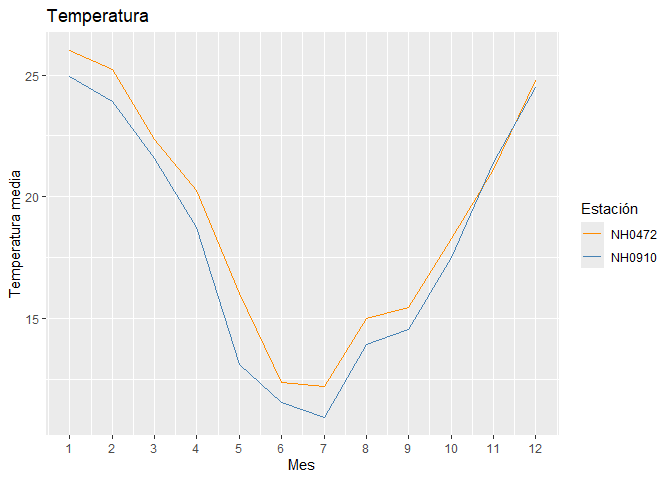

ElNino es un paquete de R para leer y analizar datos de estaciones meteorológicas. Permite descargar los datos de una estación, hacer una tabla resumen de la temperatura, calcular la precipitación de cada mes y graficar la temperatura media mensual.
Aclaración: este es un paquete de prueba que hicimos para el parcial de la materia de programación en R. No está pensado para usarse en trabajos reales.
¿Por qué ElNino? El nombre viene de El Niño, el fenómeno climático que calienta el océano Pacífico y cambia las lluvias y temperaturas en Argentina. Lo escribimos sin “ñ” porque los nombres de paquetes de R solo aceptan letras sin tilde.
Instalación
Podés instalar el paquete desde GitHub con pak:
# install.packages("pak")
pak::pak("Lucas2877/ElNino")o con remotes:
# install.packages("remotes")
remotes::install_github("Lucas2877/ElNino")Empezar rápido
El paquete trae el dataset estaciones_ejemplo, con datos de dos estaciones (NH0472 y NH0910) para 2015 y 2016, así se puede probar todo sin internet.
library(ElNino)
# Promedio y desvío de la temperatura de cada estación
tabla_resumen_temperatura(estaciones_ejemplo)
#> # A tibble: 2 × 3
#> estadistico NH0472 NH0910
#> <chr> <dbl> <dbl>
#> 1 promedio 19.1 18.2
#> 2 desvio 5.74 6.09
# Precipitación acumulada de cada mes
head(precipitacion_mensual(estaciones_ejemplo))
#> # A tibble: 6 × 3
#> id mes precip_acumulada_mensual
#> <chr> <date> <dbl>
#> 1 NH0472 2015-01-01 221
#> 2 NH0472 2015-02-01 99
#> 3 NH0472 2015-03-01 125.
#> 4 NH0472 2015-04-01 66.6
#> 5 NH0472 2015-05-01 156
#> 6 NH0472 2015-06-01 69.5
# Temperatura media de cada mes
grafico_temperatura_mensual(estaciones_ejemplo, colores = c("darkorange", "steelblue"))
Para descargar los datos completos de una estación (necesita internet):
nh0472 <- leer_estacion("NH0472")En la viñeta vignette("ElNino") hay un ejemplo más completo. ## Funciones
| Función | Qué hace |
|---|---|
leer_estacion() |
Descarga los datos de una estación meteorológica. |
tabla_resumen_temperatura() |
Calcula el promedio y el desvío de la temperatura de cada estación. |
precipitacion_mensual() |
Suma la precipitación de cada mes para cada estación. |
grafico_temperatura_mensual() |
Grafica la temperatura media de cada mes por estación. |
El paquete también trae el dataset estaciones_ejemplo.
Enlaces
- Sitio web del paquete: https://lucas2877.github.io/ElNino/
- Referencia de funciones: https://lucas2877.github.io/ElNino/reference/
- Viñeta: https://lucas2877.github.io/ElNino/articles/ElNino.html
- Código fuente: https://github.com/Lucas2877/ElNino
- Reportar un problema: https://github.com/Lucas2877/ElNino/issues
Autores
- Lucas Bruno (@Lucas2877) – mantenedor
- Valentino Ricci (@VALENTINO16-HUB)
- Lucas Boveri (@LucasBoveri)
Código de conducta
Este proyecto tiene un Código de Conducta. Al participar aceptás respetarlo.